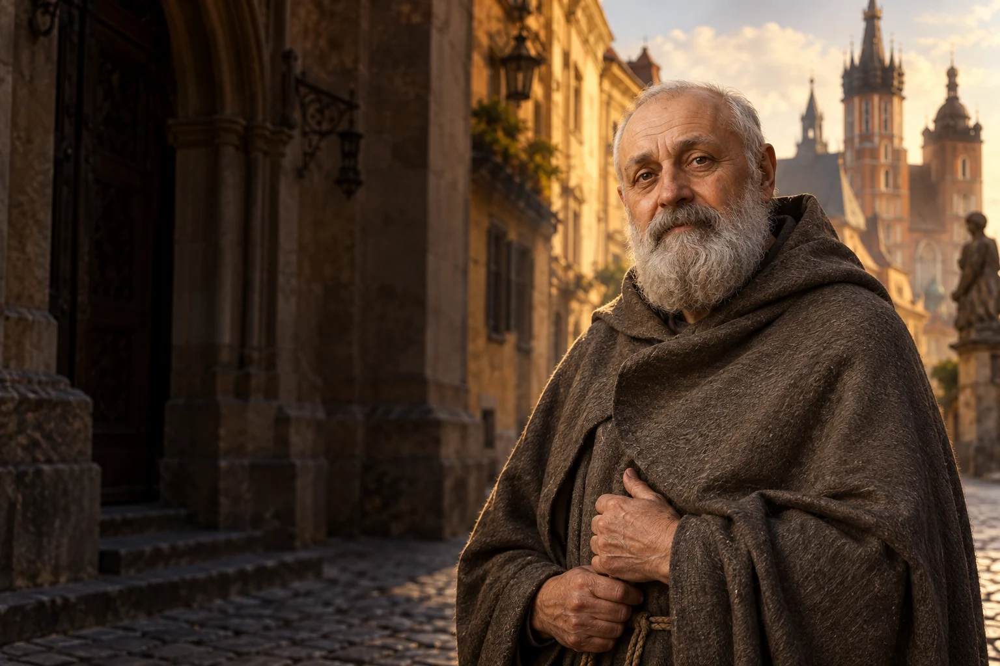

Dostrzec sąsiada
Sprawdź, jak możesz wesprzeć miejscową pomoc dla osób doświadczających bezdomności.

1845–1916
Obchód liturgiczny: 17 czerwca
Malarz i zakonnik, który poświęcił życie osobom ubogim.
Powstaniec i malarz, który jako brat Albert zamieszkał wśród osób bezdomnych i poświęcił życie służbie ubogim.
Poznaj historię jego życia →Wrażliwość na piękno może prowadzić także do uważnego spotkania z ludzką biedą.
Refleksja redakcji W Modlitwie.Adam Chmielowski rodzi się w Igołomi.
Zostaje ranny i traci nogę.
Studiuje malarstwo.
Przyjmuje imię brat Albert.
Umiera w Krakowie.
Jan Paweł II ogłasza go świętym.
 Współczesne wyobrażenie artystyczne.
Współczesne wyobrażenie artystyczne.Około 3 min czytania · 5 rozdziałów
Adam Chmielowski urodził się w 1845 roku w Igołomi koło Krakowa. W młodości stracił oboje rodziców. Jako siedemnastolatek dołączył do powstania styczniowego. Podczas walk został ciężko ranny, a następstwem obrażeń była amputacja nogi. Po klęsce powstania znalazł się na emigracji. Te doświadczenia towarzyszyły mu przez całe dalsze życie.
Rana odniesiona pod Mełchowem zakończyła jego udział w powstaniu i pozostawiła trwałą niepełnosprawność. Emigracja była dla wielu powstańców następstwem klęski. W biografii Chmielowskiego wydarzenia te poprzedzają okres intensywnej nauki i pracy artystycznej.
W 1983 roku beatyfikacja odbyła się podczas pielgrzymki Jana Pawła II do Polski. Wspomnienie świętego w czerwcu przypomina o jego pracy wśród potrzebujących, mimo że zmarł w grudniu.
Chmielowski zwrócił się ku sztuce. W latach 1870–1874 studiował w Akademii Sztuk Pięknych w Monachium. Malował i uczestniczył w życiu artystycznym, a w jego twórczości ważne miejsce zajmowały także tematy religijne. Nie uważał sztuki za zajęcie oderwane od pytań o sens życia. Stopniowo coraz wyraźniej szukał sposobu oddania swoich zdolności Bogu i ludziom.
W Monachium rozwijał warsztat i poznawał środowisko artystyczne. Malowanie było dla niego czymś więcej niż sposobem utrzymania: wiązało się z pytaniami o piękno, wiarę i zadanie artysty. Jego decyzja o zmianie drogi dojrzewała przez lata.
W Krakowie zetknął się z osobami żyjącymi w skrajnej biedzie. Podjął opiekę nad ogrzewalnią dla bezdomnych i zamieszkał wśród jej mieszkańców. Nie ograniczał pomocy do doraźnego rozdawania rzeczy: zależało mu na schronieniu, obecności i warunkach umożliwiających człowiekowi podniesienie się z nędzy. Oznaczało to także codzienne mierzenie się z trudnościami życia we wspólnocie.
Ogrzewalnia była miejscem spotkania z ludźmi, którzy nie mieli bezpiecznego domu ani stabilnego utrzymania. Zamieszkanie razem z nimi oznaczało codzienną bliskość zamiast pomocy udzielanej z dystansu. Wymagało cierpliwości, pracy i zdobywania środków na prowadzenie schronienia.
W 1887 roku przyjął habit tercjarski i imię Albert. Wokół jego pracy powstały zgromadzenia braci i sióstr posługujących ubogim. Ich działalność obejmowała prowadzenie miejsc schronienia i pomoc potrzebującym. Albert pozostał człowiekiem naznaczonym doświadczeniem wojny i sztuki, ale w ostatnim okresie życia jego najważniejszą pracą była posługa tym, którzy znajdowali się na marginesie społeczeństwa.
Bracia i siostry przyjmowali wspólny sposób życia inspirowany duchowością franciszkańską. Zakładane przez nich placówki odpowiadały na konkretne potrzeby ubogich. Działalność zgromadzeń przetrwała śmierć założyciela i rozwijała się również w następnych pokoleniach.
Brat Albert zmarł w Krakowie w Boże Narodzenie 1916 roku. Jan Paweł II beatyfikował go w 1983 roku na krakowskich Błoniach, a kanonizował w 1989 roku. W Polsce wspomina się go 17 czerwca. Jego życie łączy kilka dróg: zaangażowanie w sprawy kraju, twórczość artystyczną oraz decyzję, by żyć blisko ludzi pozbawionych domu.
W Kościele w Polsce brat Albert jest także patronem artystów plastyków. Jego biografia nie wymaga przeciwstawiania malarstwa pomocy ubogim: obie części życia pokazują człowieka, który szukał sposobu odpowiedzialnego wykorzystania swoich zdolności.
Sprawdź, jak możesz wesprzeć miejscową pomoc dla osób doświadczających bezdomności.

Znajdź chwilę na twórczość, która pomaga Ci zauważać piękno i cierpienie wokół.

Porozmawiaj z osobą w trudnej sytuacji, słuchając jej bez pośpiechu i uprzedzeń.
Ojcze nasz, któryś jest w niebie, święć się imię Twoje; przyjdź królestwo Twoje; bądź wola Twoja jako w niebie, tak i na ziemi. Chleba naszego powszedniego daj nam dzisiaj; i odpuść nam nasze winy, jako i my odpuszczamy naszym winowajcom; i nie wódź nas na pokuszenie, ale nas zbaw ode złego. Amen.
Tradycyjny tekst modlitwy; utrwalony polski wariant.Ojcze nasz →